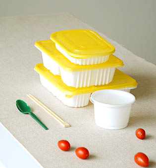
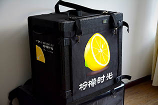

在塑料容器中，能耐受130度高温的材质是pp（5号），这也是唯一可以进微波炉的塑料容器材料。我们所有的塑料容器均为pp材质，在分装过程中也保持操作环节的卫生，避免二次污染。
在餐具的选择中，我们挑选了2011深圳大运会餐具独家供应商的盛荣雅公司。但是出品好筷子的公司，在餐巾纸方面并不出众。我们又担心其它厂商的纸巾与筷子合装的时候，导致二次污染。于是我们暂时无法提供餐巾纸，牙签也是基于相同的原因无法提供。给你带来的不便，还请见谅。
外卖由于运送的原因，可能会导致温度降低。我们特别采购了高保温的送餐包，右上角的箱内数字温度表也提供了随时监控的参数，确保热乎乎的饭能送到你的手中。